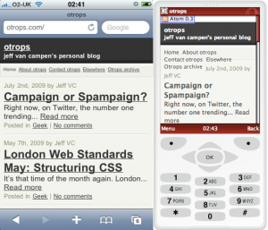

vamo, vamo, vamo…
Alecão
Engenheiro de Software que mora em Santo André-SP
Home page: http://www.dundes.com/wiki/Alex/HomePage
Jabber/GTalk: alex.dundes@gmail.com
Posts by Alecão

Mãe, olha eu!
47 years
by Alecão
in Ex-sedentário
Na Meia Maratona Internacional de São Paulo de 2011, teve a estréia de mais uma ex-sedentária. Desta vez foi minha mãe que estreou. Ela já é uma caminhante, que poucos conseguem acompanha-la, por causa da passada rápida sem trotar. E queria participar de uma caminhada em corrida e faltava eu fazer a minha parte.
Acompanhando a galera
0Novidades no nosso blog! Criei uma página hoje chamada “Todo mundo junto“. Que pode ser acessada diretamente do nosso menu (acima).
Ela mostra os últimos posts nossos e dos nossos amigos corredores TUDOJUNTO. É uma forma de mostrar a união do povo.
Visite regularmente e acompanhe a galerinha!
Estamos móveis
37 years
by Alecão
in Ex-sedentário
Agora já é possível acessar o Cia Ex-sedentário direto do seu celular, smartphone, android, iPhone, iPod Touch, iPad… O conteúdo é mais simples e de fácil navegação. Aproveite e nos veja durante o seu treino 🙂

Mogi, Mogi, a terra do caqui…
77 years
by Alecão
in Ex-sedentário
Demorei mas finalmente eu vou fazer o post sobre a corrida de Mogi das Cruzes.
Moro em Santo André e para chegar em Suzano (para encontrar o Luciano) levei mais de 1 hora e para ajudar o Google Maps me enganou. Na sequência, eu e o Luciano partirmos para Mogi das Cruzes, cidade vizinha de Suzano, chegamos lá era antes das 8, a largada era apenas as 8:30. E o sol já estava BRILHANDO.
Encontramos por lá o Edson, que manda muito bem na corrida e estava junto com a sua assessoria.


Meus tempos (paces):
- Km 1 – 6:23 – Começamos rápido, principalmente por causa do tumulto da largada, pois logo na largada voltávamos e corremos em volta do Mogi Shopping, “conhecendo o estacionamento”. Logo saímos do estacionamento e cruzamos uma linha férrea, muita curva, iamos pela calçada, pelo meio fio…
- Km 2 – 7:03 – Rítimo já aceitável para mim. E estávamos em subida.
- Km 3 – 7:27 – Um pouquinho de descida.
- Km 4 – 8:05 – Uma outra subidinha. E o sol começa a esquentar o coco. Tava aquele sol ardido. O que salvava era a sombra do muro. Logo viramos a direita e começa uma descida um pouco antes de chegar no 5. Tentando recuperar o rítimo.
- Km 5 – 7:36 – A descida ajudou a recuperar o tempo. Viramos para direita de novo.
- Km 6 – 8:40 – o sol estava nas costas, e a água não mais resfriava meu corpo. Os passos foram ficando pesados e eu falei para o Luciano. “Vai embora”. Ele esta em um rítimo bom e eu não queria atrapalhar. Passei a caminhar rápido. Não tinha sombra, não dava para fugir do calor.
- Km 7 – 8:54 – Além do calor, começa uma subida meio chata, depois conversando com o Luciano, ele me disse que caminhou apenas nesta subida.
- Km 8 – 8:14 – No final da subida, começou a aparecer sombras, minha salvação. Alternava corrida com caminhada, até que um pouco antes da chegada, uma descida, volto a correr, encontro o Edson pouco antes da chegada, dando o maior incentivo.
Terminei a prova com o tempo oficial de 01:02:25 na 776º posição geral e 129º na minha faixa etária.


Para fechar com chave de ouro, tiramos fotos com os “sózias”:


Achando que eu tinha dado tudo nesta corrida, o cansaço maior estava por vir. Levei o Luciano para a casa dele e depois viajei de volta para Santo André, minha mulher me esperava para uma festinha a tarde, tomei um banho super rápido e fomos. Voltando para casa quase as 8 da noite. O Maurício passa mal, vomita, uma, duas, três… fomos para o hospital. Voltei de lá as 23:00 e a Andrea ficou por lá com ele. E fiquei acordado em casa com a Olívia esperando a Andrea me ligar. As 3 da manhã a Olívia vomitou. Corri com ela para o hospital e, com a Andrea, trocamos de filho, voltei para casa com o Maurício e deixei a Olívia e Andrea no hospital. Dormi as 4 da manhã, porque não tinha mais condições, era zumbi em pessoa, 23 horas acordado com direito a uma corrida de 8K. 8 horas a Andrea me liga para buscar ela. 4 horas de sono me ajudaram muito. Fui dormir novamente somente a noite. Graças a Deus as crianças não tiveram recaídas e ficaram ótimas depois das sessões de soro.
Cia. Ex-Sedentário
67 years
by Alecão
in Ex-sedentário
O nome Ex-Sedentário, surgiu de uma meta pessoal minha. Meu primo se adentrou na idéia e apoiou. Com o tempo surgiu o Thiago, a Ana, o Luciano, outros entraram e depois nunca mais deram as caras e por fim a Moça também apareceu por aqui.
O site sempre foi um grupo (já iniciou como uma dupla), mas o nome Ex-Sedentário no singular, trouxe a idéia que se tratava de apenas uma pessoa. Muitos confundem a idéia. Mesmo porque na bloguesfera corrística o que vemos sempre é um blog para cada corredor.
Muitas vezes pluralizamos o nome como Ex-Sedentários. Trazendo mais confusão que ajuda. Ultimamente vejo que o Claudio assina os comentários em outros blogs como Cia. Ex-Sedentário e eu particularmente gostei da idéia. E eu (como mando nesse negócio 🙂 ) resolvi oficialmente a partir de hoje que o blog/equipe agora se chama Cia. Ex-Sedentário.
Treino descalço na areia
57 years
by Alecão
in Ex-sedentário
Sábado passado estava em Mongaguá curtindo a praia com a família. Já estava incomodado por não conseguir treinar desde a corrida do Carrefour. E fiquei na expectativa de encaixar um treino no meio do passeio. Surgiu a oportunidade de correr até a praia. Pus o tênis e fui, mas quebrei por causa do calor. “Busca o baldinho que esquecemos” e tentei correr de novo e quebrei novamente. Infelizmente ainda precisarei perder muita gordura para conseguir treinar com o sol escaldante.
Já tinha desistido de treinar. Quando as 17 horas, vi que o sol tinha dado um trégua (nuvens cobriam). E pensei, vamos lá. Estava embaixo do guarda-sol fazia tempo, já que morro de medo de me queimar com o sol. Coloquei a camiseta, o boné, sem relógio, sem tênis e fui, sem saber até onde iria.
Mirei um prédio branco que se destacava mais a frente. E fui. Aproveitei para entender como o meu pé pousa no chão, evitando pousar de calcanhar. Apesar de o sol estar encoberto, o calor castigava.
Consegui chegar no prédio. Ai tive a idéia de ver a numeração da rua. Assim poderia ter uma idéia da distância.
Voltei… Correndo o tempo todo. E cheguei de volta aos guarda-sóis.
A Andrea: “Já voltou? Quanto tempo levou?”
Nem fazia idéia, mas deveria ter passado uns 30, 40 minutos, sei lá! Nem importa. Corri menos de 4Km, mas tive a sensação do dever cumprido. Depois da corrida, lembrei que poderia de “ralado” o pé com o atrito com a areia, felizmente isso não aconteceu!
Domingão, acabei relachando. Coisas de Alex. Um dia ansioso para correr e outro dia de preguiça. Acabei nem treinando.
Hoje a logística não permetiu um treininho. Mas aproveito para avisar que acabei de me inscrever para a Flex Pé de Mogi. A idéia e correr ao lado do Luciano, que ja atingiu o meu pace. Tenho que aproveitar, porque nas próximas, provavelmente ele já correrá na minha frente. 🙂
Na cabeça!
127 years
by Alecão
in Ex-sedentário
Pois então, na segunda feira, terminei o post dizendo: Vamo, vamo, vamo… Alecão 1h20m na cabeça!
Então… eu consegui fazer a corrida Carrefour Viver 10K em 1h19m30s, como diria a Moça: uhuuuuuuu!
Tudo começou com o relógio despertando a 5 da manhã. Depois de uma noite em que eu não dormi nada. Sabe como é a ansiedade?
Ainda por cima, moro em Santo André e trabalho em São Paulo, portanto em casa só para mim era feriado e não estava motorizado e tive que encarar o buzão até o Ibiriapuera.

")
Já disse que odeio acordar cedo? Acho que ainda não. Pois é. ODEIO! Mas pela corrida vale o sacrifício. O trajeto de buzão e depois metrô. Desci na Ana Rosa. E encarei uma caminhada de 2 Km até o Obelisco (estava inspirado).
Cheguei cedo, por volta das 7h, melhor assim. Morro de ansiedade se chego em cima da hora. Sem nada para fazer fiquei na concentração.
")
")
")
")
")
Perto da hora da largada, resolvi ir mais para trás, afinal meu pace é baixo e não queria ser atropelado.
")
")
")
Na primeira foto anterior, no canto direito inferior, aparece o Ronaldo, na hora da largada eu vi que o conhecia, mas não confio na minha memória, então deixei pra lá. Foi um colega de trabalho (Adriano) que me disse que seu cunhado havia participado da prova e ai lembrei dele, ele é irmão da responsável pelo RH daqui da empresa. hehehe.
Dado a largada, muito emocionante encarar de cara a Rubem Berta, de suas subidas e descidas, que surpreendem os que debutam ela. Como é minha quarta corrida no mesmo percurso, resolvi subir andando 3 ladeiras e assim me poupar para o final. Já no Km 3 retornamos pela Rubem Berta.
")
")
")
")
Após o Km 5, acabou a Rubem Berta, sabia que a partir dali era só administrar. Quando a surpresa, o “meu herói” apareceu e disse que me acompanharia.
")
Estávamos na metade da prova. Me senti capaz de terminar inteiro. E ainda com meu herói ao lado. Não podia ser melhor. O Thiago disse que fez 8Km antes de entrar no percurso (sim, ele apenas estava treinando). E decidiu correr até o fim da prova ao meu lado, encarando meu slow-running.
Passamos o Km 6 e contei para o Thiago que no ano anterior, imaginava o pórtico no Km 6 e era bem mais para frente. Este ano corrigiram para mais perto e ainda colocaram 6,1Km na hora do pessoal se inscrever. Pelo jeito muita gente reclamou.
No Km 7, houve distribuição de Gel. Muito bom, recarregou as baterias. Pena que foi fazer efeito apenas depois do Km 9.
")
")


Já faltando pouco para a chegada (500 metros), consegui recuperar o rítimo e faltando uns 50 metros consegui dar um sprint tímido. Terminando a prova com o tempo de 1 hora 19 minutos e 30 segundos, baixando o meu tempo de 10K em 6 minutos, que antes era de 1h26.
Minha alegria, foi muito grande. Pois sinto que a cada dia estou melhorando e cada prova vou tendo a confirmação disso. A verdade é que senti que poderia mais e que fui muito cauteloso. Mas melhor assim do que quebrar e ter os sonhos atrapalhados.
")
")
Thiago, valeu pela ajuda. Ter companhia é tudo. Espero um dia poder retribuir.
Para voltar para casa, resolvi subir até a Paulista, mais uns 2 a 3 Km de distância. Entre corrida e caminhada, encarei quase 15Km. Mas valeu a pena, tanto que hoje de manhã, tive vontade de correr. Pena que a logística não permite. Treino só amanhã.
Agora é planejar o próximo desafio. E vamo, vamo, vamo vivendo feliz!!!
Imaginando a linha de chegada
27 years
by Alecão
in Ex-sedentário
Sabadão, acordo tarde e vou pra rua, sol estava fraco, bom para treinar. Pensei, quem sabe hoje quebro mais uma meta: A de correr por 6Km sem quebrar o rítimo para caminhada. E saí, com direito a ladeirinha e corri ela. Lá em cima, pensei. Quem sabe? E fui trotando devagar, achando que iria manter aquele rítimo.
Fui até o ponto em que faço bate volta. Até aqui foi uma descida só. Olho pro cronômetro e ele marca 22 minutos. Se a volta não fosse subida, conseguiria terminar em 44, pensei. Mas é o que mata. A volta é uma subida só, que vai aumentando o seu aclíve aos poucos.
Continuei trotando. Passei pelo trecho em que havia “quebrado” 3 dias antes. – Acho que dá!
Mais um pouco, o corpo não respondia. Foi nessa hora que no rádio comecei a escutar a música Firework da Kate Perry. Lembrei da letra, lembrei do clip. Bem, vejam por vocês mesmos:
Nesse momento comecei a sentir uma euforia grande. Lembrei que saí de casa e as crianças ainda estavam dormindo. Mas que ao voltar, eles estariam acordados. Junto com a música rolando, me imaginei cruzando o portão de casa como se fosse um pórtico e em meu pensamento eu gritava. Olívia, Maurício, o papai conseguiu, o papai fez 6 Km sem caminhar. E imaginei a festa que eles fariam e com direito a fogos de artifício.
A música acabou. Mas meu rítimo aumentou. Não via a hora de minha mentalização se realizar. Com toda esta euforia, a subida foi fichinha. E chegando em casa fiz toda a festa que eu imaginei. Foram 48 minutos cravados… Eu consegui! Eu consegui! Eu consegui!
Domingo, foi dia de parque. A Andrea caminhando e as crianças junto. Fiquei correndo em círculo e o Maurício correu ao meu lado por pelo menos 2 Km… Olha que ele tem apenas 6 anos. Fiquei impressionado com a disposição dele. E também da Olívia (8 anos) que queria colo por cansaço, mas ao avistar o brinquedo, saiu correndo. hehehehe.
Hoje, foi descanço, mas acabei caminhando um pouco para buscar o kit da corrida de amanhã.
Amanhã, serão 10Km. Ainda não me sinto confortável com esta distância, mesmo tendo feito os 15K da São Silvestre. Meu desejo é quebrar a marca anterior de 1h26min. Thiago me disse que irá fazer um treino aproveitando o percurso e que na segunda volta irá me procurar, espero que ele me encontre, estou precisando deste incentivo. Vamo, vamo, vamo… Alecão 1h20m na cabeça!
1ª Corrida Mogi Shopping FlexPé
57 years
by Alecão
in Fazendo mais com menos
Este post inaugura a seção “Fazendo mais com menos“. Fiquei sabendo dessa com o companheiro de blog Luciano. Esta corrida é na sua cidade. E provavelmente ele irá correr.
Eu ainda não decidi se vou ou não.
Mas fica aqui a divulgação.
O percurso segundo o Luciano é muito bonito, com áreas verdes. E o preço?
R$ 35,00 até o dia 31/01/2011.
Queeeeeente
27 years
by Alecão
in Ex-sedentário
Depois de 2 dias sem treinos. Hoje fui para a rua de tarde (as 3 horas) e o sol estava rachando. Muito ardido. Tanto que arriei aos 25 minutos de corrida. Continuei caminhando até em casa totalizando 53 minutos de treino. Meus braços ficaram vermelhos. Com certeza estava mais que 30 graus e era o típico sol de chuva. Tanto que depois de 5 minutos que estava em casa, começou a chover.
Não é fácil ter pele clara. Fico feliz de meus 2 filhos terem pele morena. Ser sensível ao sol, ninguém merece.
.jpg "DSC01717 (1024x576)")
.jpg "DSC01828 (1024x576)")
.jpg "DSC01838 (1024x576)")
.jpg "DSC01883 (1024x576)")


{kind=link}
{kind=link}
{kind=link}
{kind=link}
{kind=link}
{kind=link}
{kind=link}
{kind=link}
{kind=link}
{kind=link}
{kind=link}
Últimos comentários